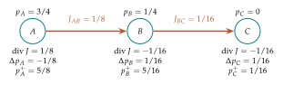

A shared bicycle can be at one of several stations at the end of a day. A mobile device can connect to one of several towers. A system can report one of several operating modes. In each case, we can describe uncertainty about its location or mode by a probability vector, then ask how that vector changes after one step.
The edge bookkeeping from Chapter 3 gives us a local description of these changes: what leaves one location enters another. A stochastic matrix packages all the transition rules into a single table. We will derive the matrix update from individual contributions, recover its currents, and then explain how a finite collection of observations fluctuates around the predicted probabilities.
What one transition probability means
Let the possible locations be \(A,B,C\). The entry \(K_{ij}\) will mean the probability of arriving at location \(i\) when the starting location is \(j\). The first index gives the destination; the second gives the origin.
Each column therefore lists all possible destinations from one origin. Its entries must be nonnegative and add to one: \[K_{ij}\geq0,\qquad \sum_i K_{ij}=1.\] Such a table is called column-stochastic. The diagonal entry \(K_{jj}\) is the probability of remaining at \(j\).
Consider a path \(A\)–\(B\)–\(C\). During one step, send one quarter of the mass at each location to each adjacent location and retain the rest. From \(A\), the only neighbor is \(B\), so three quarters remain. From \(B\), there are two neighbors, so one half remains. The table is \[K=\begin{pmatrix} 3/4&1/4&0\\ 1/4&1/2&1/4\\ 0&1/4&3/4 \end{pmatrix}.\] Reading the middle column gives the destinations from \(B\): a quarter at \(A\), half at \(B\), and a quarter at \(C\).
This table can model a random transition of one object or a deterministic redistribution of a divisible mass. Both interpretations use the same arithmetic, but they describe different kinds of uncertainty.
Matrix multiplication adds contributions from origins
Suppose the current distribution is \(p=(p_A,p_B,p_C)\). To calculate the next probability at \(A\), add contributions from every origin: \[p_A^+=\frac34p_A+\frac14p_B+0p_C.\] The same calculation for every destination gives \[p_i^+=\sum_j K_{ij}p_j.\] This collection of weighted sums is matrix multiplication, written \(p^+=Kp\). We regard \(p\) as a column when multiplying, even when displaying it compactly as a tuple.
Example. Two steps starting at one location
Start at \(p_0=(1,0,0)\). Multiplication selects the first column: \[p_1=\left(\frac34,\frac14,0\right).\] For the next step, \[\begin{aligned} p_{A,2}&=\frac34\frac34+\frac14\frac14=\frac58,\\ p_{B,2}&=\frac14\frac34+\frac12\frac14=\frac5{16},\\ p_{C,2}&=\frac14\frac14=\frac1{16}. \end{aligned}\] Thus \(p_2=(10/16,5/16,1/16)\). Probability reaches \(C\) only after passing through \(B\). The entries add to one, which checks the arithmetic.
A matrix of transition probabilities defines a Markov update when the next distribution depends on the present state through this rule, without additional dependence on earlier history. A model with delays may need a larger state that records the relevant history.
The identity matrix \(I\) leaves every vector unchanged. Subtracting \(p_n=Ip_n\) gives a vector difference equation: \[\boxed{p_{n+1}=Kp_n,\qquad \Delta p_n=(K-I)p_n.}\] A difference is now a vector of coordinate changes. The definition still means next minus current.
The calculation of \(p_{A,2}=5/8\) can also be read as a sum over two-step histories. Starting at \(A\), the histories that end at \(A\) are \(A\to A\to A\) and \(A\to B\to A\). Their probabilities are \((3/4)(3/4)\) and \((1/4)(1/4)\). Adding them gives \(10/16\). Matrix multiplication performs this path accounting simultaneously for all destinations.
This interpretation explains why transition matrices compose by multiplication. If one step uses \(K\) and the next uses \(R\), the final distribution is \(R(Kp)=(RK)p\). An entry of \(RK\) adds probabilities over all possible intermediate locations. Reversing the steps gives \(KR\), which need not be the same matrix. The chronological order is read from right to left in the product because the rightmost operation acts first.
A column convention should be tested on a concentrated input. Multiplying by \((1,0,0)\) must reproduce the destinations from \(A\). This quick check is especially useful when consulting a source that uses row distributions instead. Both conventions are valid when used consistently; mixing them changes the transition rule.
Conservation follows from column sums
The sum of all new probabilities is \[\begin{aligned} \sum_i p_i^+ &=\sum_i\sum_j K_{ij}p_j =\sum_j p_j\left(\sum_i K_{ij}\right)\\ &=\sum_j p_j=1. \end{aligned}\] We have exchanged the order of two finite sums: adding a rectangular collection by rows or by columns gives the same total. The column-sum condition then supplies the conservation law.
Nonnegativity is also preserved because each new entry is a sum of nonnegative products. The matrix therefore sends probability vectors to probability vectors.
Taking the difference of the two total masses gives \[\sum_i\Delta p_n(i)=0.\] Some coordinates can rise and others fall, but their changes balance. For the two-step example, \[\Delta p_0=(-1/4,1/4,0),\qquad \Delta p_1=(-1/8,1/16,1/16).\] Both vectors have total zero.
Currents recover the local picture
The amount traveling from \(i\) to \(j\) is \(K_{ji}p_i\). The amount traveling the other way is \(K_{ij}p_j\). Define the net current from \(i\) to \(j\) by \[J_{ij}=K_{ji}p_i-K_{ij}p_j.\] Then \(J_{ji}=-J_{ij}\). A negative net current simply means that the opposite direction carries more mass.
For the symmetric path example, \[J_{AB}=\frac14(p_A-p_B),\qquad J_{BC}=\frac14(p_B-p_C).\] Mass flows from the larger probability to the smaller one along each edge. With \(p=(1,0,0)\), the currents are \(J_{AB}=1/4\) and \(J_{BC}=0\).
Choose arrows \(A\to B\) and \(B\to C\). The outward divergences are \[\operatorname{div}J(A)=J_{AB},\quad \operatorname{div}J(B)=J_{BC}-J_{AB},\quad \operatorname{div}J(C)=-J_{BC}.\] At \(B\), the current on \(AB\) is incoming and therefore subtracted. The update is \[\boxed{\Delta p(i)=-\operatorname{div}J(i).}\] This continuity equation says that stored mass decreases by the net amount sent outward.
The equation holds for a general column-stochastic matrix as well. Subtracting outgoing transport from incoming transport gives \[\sum_{j\ne i}(K_{ij}p_j-K_{ji}p_i) =\sum_jK_{ij}p_j-p_i,\] where the last step uses the sum of column \(i\). The diagonal stay-put term cancels correctly.
Example. Checking currents at the second step
At \(p_1=(3/4,1/4,0)\), we obtain \(J_{AB}=1/8\) and \(J_{BC}=1/16\). Thus the divergences are \((1/8,-1/16,-1/16)\). Their negatives reproduce \(\Delta p_1\). Location \(B\) sends some mass onward to \(C\), yet gains overall because more arrives from \(A\).
For a group of locations, sum their continuity equations. Internal currents cancel and only currents crossing the group’s boundary remain. This is the same cancellation proved on the lattice in Chapter 3, now describing changes of an actual probability distribution.
Example. Conservation across the boundary of a region
Treat locations \(A\) and \(B\) as one region of the three-node path. Its stored probability is \(s_n=p_{A,n}+p_{B,n}\). The continuity equations give \[\Delta s_n=-J_{AB}+(J_{AB}-J_{BC})=-J_{BC}.\] Only the current from \(B\) to \(C\) changes the region’s total. At \(p_1=(3/4,1/4,0)\), that current is \(1/16\), so the regional mass falls from one to \(15/16\) during the next step.
Over several steps, summation gives \[s_T-s_0=-\sum_{n=0}^{T-1}J_{BC,n}.\] Spatial cancellation removes the internal edge, and temporal cancellation removes intermediate stored values. The final identity combines the two fundamental operations of our calculus. It is a useful model for inventory crossing a facility boundary, traffic entering and leaving a district, or probability entering a selected set of states.

Stationarity permits motion without accumulation
A stationary distribution \(\pi\) satisfies \(K\pi=\pi\). Every coordinate then has zero net change. For the symmetric path, \(\pi=(1/3,1/3,1/3)\) is stationary because every row also sums to one.
Stationarity does not mean that individual objects stay still. At uniform probabilities, equal amounts travel in both directions across each path edge. Net current is zero, although the separate one-way flows are positive.
Stationarity also does not guarantee convergence from every starting state. The cyclic rule \(T(p_A,p_B,p_C)=(p_C,p_A,p_B)\) fixes the uniform distribution but rotates every nonuniform state with period three.
A two-location example makes the possibilities explicit. Let the transition probability from \(A\) to \(B\) be \(a\) and the reverse probability be \(b\), with \(0\leq a,b\leq1\). Then \[K=\begin{pmatrix}1-a&b\\a&1-b\end{pmatrix}.\] Writing \(x=p_A\) gives \[x^+=(1-a)x+b(1-x)=b+(1-a-b)x.\] When \(a+b>0\), the stationary value is \(c=b/(a+b)\). Subtracting it gives \[x^+-c=(1-a-b)(x-c).\] This is precisely the feedback error equation from Chapter 2. If \(0<a+b<2\), errors shrink. If \(a=b=1\), the multiplier is \(-1\) and the two locations alternate. If \(a=b=0\), every state is stationary.
A distribution and an observed count are different objects
Suppose a model predicts \(p=(1/2,1/3,1/6)\). Twelve independent observations have expected counts \((6,4,2)\), but the realized counts could be \((7,4,1)\) or another feasible triple. The empirical proportions are the observed counts divided by twelve.
An outcome is one possible result. An event is a collection of results. Event probabilities are added over their constituent outcomes. For independent observations, probabilities of specified successive outcomes multiply.
If two independent observations each have probabilities \(p_A,p_B,p_C\), the ordered pair \(AC\) has probability \(p_Ap_C\). A probability tree records this multiplication along a path. To find the probability of several paths, add their probabilities.
Independence is a model assumption. Drawing from a finite box with replacement can produce independent draws; drawing without replacement generally does not. From a box with two red tokens and one blue token, \[P(R\text{ then }B)=\frac23\frac13=\frac29\] with replacement, but it is \((2/3)(1/2)=1/3\) without replacement. The second procedure changes the probabilities available at the next draw.
Counting ordered samples with the same composition
For \(N\) independent binary observations with success probability \(p\), a particular ordered sample containing \(k\) successes has probability \(p^k(1-p)^{N-k}\). There are \[\binom Nk=\frac{N!}{k!(N-k)!}\] ways to choose the success positions. Here \(N!=1\cdot2\cdots N\), and \(0!=1\). Consequently \[P(\text{exactly }k\text{ successes})=\binom Nk p^k(1-p)^{N-k}.\] The coefficient counts orders; the powers give the probability of each order.
Example. One count, several orders
With four trials and two successes, the six orders are \(SSFF,SFSF,SFFS,FSSF,FSFS,FFSS\). If \(p=1/3\), each has probability \((1/3)^2(2/3)^2=4/81\). The event of exactly two successes has probability \(6(4/81)=8/27\).
For \(k\) categories and counts \(n_1,\ldots,n_k\) adding to \(N\), the number of compatible ordered samples is the multinomial coefficient \[\Omega(n)=\frac{N!}{n_1!\cdots n_k!}.\] Choose the positions of category one, then category two among the remaining positions, and continue. The factorials cancel to this expression.
The count probability is \[\boxed{P(n_1,\ldots,n_k)=\Omega(n)\prod_i p_i^{n_i}.}\] The product sign \(\prod\) means multiply over the indices. A factor with exponent zero contributes one because no occurrence of that category is required.
For \(N=4\), counts \((2,1,1)\) have multiplicity twelve. Under \(p=(1/2,1/3,1/6)\), each compatible ordered sample has probability \(1/72\), so the count event has probability \(1/6\). The empirical distribution \((1/2,1/4,1/4)\) is a lattice point from Chapter 3.
All count probabilities add to one because every ordered sample belongs to exactly one count category. Grouping the samples changes the description, not the total probability.
Example. All possible count outcomes for two observations
For two independent observations from \(p=(1/2,1/3,1/6)\), the six possible count states have probabilities:
| Counts | Multiplicity | Count probability |
|---|---|---|
| \((2,0,0)\) | 1 | \(1/4\) |
| \((0,2,0)\) | 1 | \(1/9\) |
| \((0,0,2)\) | 1 | \(1/36\) |
| \((1,1,0)\) | 2 | \(1/3\) |
| \((1,0,1)\) | 2 | \(1/6\) |
| \((0,1,1)\) | 2 | \(1/9\) |
With denominator thirty-six, the numerators are \(9,4,1,12,6,4\), summing to thirty-six. This checks the whole count distribution.
The most probable single count state in this example is \((1,1,0)\), but many other states remain possible. The expected counts are \((1,2/3,1/3)\), which are not themselves a realizable integer count state. An average over possible samples need not be one of those samples.
The chance of observing no \(A\) can be read either from the table or directly. Adding the three no-\(A\) count probabilities gives \(1/4\); requiring two observations from the complement gives \((1-p_A)^2=(1/2)^2\). Agreement between these two calculations checks both the counting and the independence assumption.
Expected values explain what the update predicts
A random variable assigns a numerical value to each outcome. Its expectation is the probability-weighted average: \[\mathbb E[X]=\sum_i p_ix_i.\] The variance measures average squared deviation from that mean: \[\operatorname{Var}(X)=\sum_i p_i(x_i-\mathbb E[X])^2 =\mathbb E[X^2]-(\mathbb E[X])^2.\] The second identity follows by expanding the square. Its square root is the standard deviation.
For a success indicator \(I\), the values are one with probability \(p\) and zero otherwise. Hence \(\mathbb E[I]=p\) and \(\operatorname{Var}(I)=p(1-p)\). A success count is the sum of \(N\) such indicators. Expectations add; for independent indicators the variances also add. Thus \[\mathbb E[K]=Np,\qquad \operatorname{Var}(K)=Np(1-p).\] The empirical proportion \(\widehat p=K/N\) satisfies \[\mathbb E[\widehat p]=p,\qquad \operatorname{Var}(\widehat p)=\frac{p(1-p)}N.\]
For \(N=100\) and \(p=0.2\), the count has mean twenty and standard deviation four. The empirical proportion has mean \(0.2\) and standard deviation \(0.04\). Increasing the sample size fourfold halves this standard deviation. It reduces the typical scale of fluctuations across repeated samples; it does not force every larger sample to be closer.

A finite bound also follows directly from the variance. On the event \(|\widehat p-p|\geq\varepsilon\), the squared deviation is at least \(\varepsilon^2\). Its average is therefore at least \(\varepsilon^2\) times the probability of that event. Rearranging gives \[P(|\widehat p-p|\geq\varepsilon) \leq\frac{p(1-p)}{N\varepsilon^2}.\] This is an instance of Chebyshev’s inequality. It can be a loose bound, but it requires no approximation to the sampling distribution.
Why do expectations add without independence? Expand an average over all joint outcomes and group the contribution of the first variable separately from that of the second. Each variable’s marginal probabilities emerge when the other is summed out. Correlations do not affect this linear accounting.
Variances behave differently. Expanding \((X+Y)^2\) introduces the product term \(2XY\). Under independence its average factors as \(2\mathbb E[X]\mathbb E[Y]\), producing variance addition. Without independence, that cancellation need not occur. A batch of observations influenced by the same event can fluctuate together, making the independent-trial formula underestimate their collective variability.
For physical objects taking random transitions, a deterministic matrix update predicts mean counts. If there are twenty objects at \(A\), each independently following the first column of the path matrix, the expected numbers are fifteen at \(A\) and five at \(B\). The actual allocation is random. If there are three objects, the expected numbers are \(9/4\) and \(3/4\); these fractional expectations do not mean an object was divided.
For a fixed matrix, averaging sampled trajectories is compatible with the linear update: conditional expected next proportions are \(Kp_n\). For a nonlinear selection rule, averaging before and after applying the rule need not give the same result. This is another reason to specify which level of the model a probability vector describes.
What can disappear in a finite observation
If a category has probability \(p>0\), the chance of missing it in \(N\) independent observations is \((1-p)^N\). With \(p=1/20\) and \(N=20\), this probability is about \(0.3585\). An expected count of one is compatible with observing zero.
This distinction matters for both geometry and information. Exact positive multiplication preserves an existing category. Finite sampling can land on a boundary lattice state where its observed count is zero. Treating an observed zero as an impossible event would be a further modeling choice.
One can combine transport and sampling: compute \(p^+=Kp\), then draw \(N\) observations from \(p^+\). The conditional mean of the sampled proportions is \(p^+\). The realized proportions fluctuate around it and need not obey the deterministic trajectory exactly. This two-stage model separates the transition mechanism from observation noise.
Use the transport view of the operator explorer to check that the negative divergence equals each coordinate change. Use the sampling demonstration to compare repeated empirical distributions.
So far we can describe where probability goes and how observations fluctuate. Chapter 5 asks what uncertainty does during those changes. It turns entropy from a field we can evaluate into a quantity whose differences we can interpret and analyze.
Exercises
- Explain the meaning of every column in the three-location transition matrix. Check nonnegativity and column sums.
- Starting from \(p_0=(0,1,0)\), compute \(p_1,p_2\) and both vector differences.
- For \(p=(1/2,1/3,1/6)\), compute the two path currents, all divergences, and the next state.
- Prove that the general net-current formula gives \(\Delta p=-\operatorname{div}J\).
- For the two-location rule with \(a=1/4\), \(b=1/2\), find the stationary distribution and error multiplier. Calculate two updates from \((1,0)\).
- Explain why the swap rule \(a=b=1\) has a stationary distribution but does not converge from \((1,0)\).
- Calculate the probability of exactly three successes in five independent trials with success probability \(2/3\).
- Find the multiplicity and probability of counts \((1,2,1)\) under \(p=(1/2,1/3,1/6)\).
- For readings \(1,2,5\) with probabilities \(1/4,1/2,1/4\), calculate expectation and variance.
- For \(N=100\) and \(p=0.2\), find the standard deviations of the count and empirical proportion. Repeat for \(N=400\).
- A category has probability \(0.1\). Find the first integer sample size for which its probability of being missed is below \(0.05\).
- Describe a simulation that first transports probability by \(K\) and then draws a finite sample. Explain which quantities are deterministic and which are random.
Selected exercise solutions
2. The new states are \((1/4,1/2,1/4)\) and \((5/16,3/8,5/16)\). Their differences from their predecessors are \((1/4,-1/2,1/4)\) and \((1/16,-1/8,1/16)\).
3. Both currents are \(1/24\). Divergence is \((1/24,0,-1/24)\), so the next state is \((11/24,1/3,5/24)\).
5. The stationary state is \((2/3,1/3)\) and the multiplier is \(1-a-b=1/4\). Starting at \((1,0)\) gives \((3/4,1/4)\) and \((11/16,5/16)\).
7. The count probability is \(\binom53(2/3)^3(1/3)^2=80/243\). A single specified order with those counts has probability \(8/243\).
8. The multiplicity is \(4!/(1!2!1!)=12\). Multiplying by \((1/2)(1/3)^2(1/6)\) gives probability \(1/9\).
11. Since \(0.9^{28}\approx0.05233\) and \(0.9^{29}\approx0.04710\), the first qualifying size is twenty-nine.